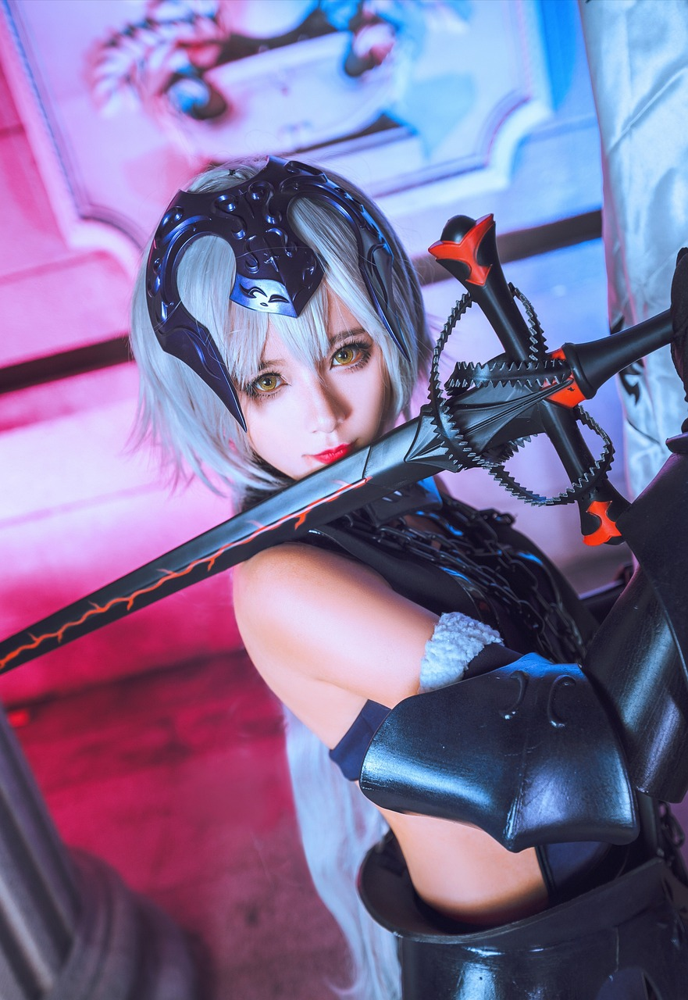

El cosplay surgió sobre los años 70 en los Comic Market
El cosplay es una actividad en la cual se disfrazan de personajes ficticios con el fin de parecerse lo máximo posible a ellos.
Los cosplayers (la gente que se disfraza de un personaje) suelen ser fans de personajes de cómics, cine, manga, libros, videojuegos...
También existe otro término en el cosplay, el cual se llama crossplay. Se le llama crosplayer a una persona que se disfraza de un personaje del género opuesto.
Empecé a hacer cosplay hace 2-3 años. Suelo ir a un evento en Sevilla llamado "mangafest", que se celebra 2 veces al año, a finales de junio y a principios de diciembre.
Aparte de asistir mucha gente dsifrazada, también viene gente como creadores de contenido o actores para que la gente vaya a conocerlos.